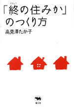
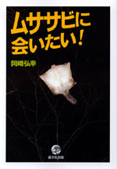

|
|
思想･社会 | ||||||
| 平和と平等をあきらめない | |||||||
| 高橋哲哉・斎藤貴男 | |||||||
| 四六判 288頁 | |||||||
| 定価1470円（本体1400円） | |||||||
| 4-7949- 6611-3 C0036 | |||||||
| 現在、「強者の論理」がまかり通っている。 人が人を見下すことが日常化しなければ、戦争はできない。不平等が拡大した階層社会と、自国を疑わない愛国心が整ったとき、戦争は遠くないだろう。 自衛隊がイラクに派遣され、憲法改正が迫る現状をどう見るか。「平和と平等」の理想はどこへ行ってしまうのか。 哲学者とジャーナリストの渾身対論。 | |||||||
|
|
将棋・エッセイ | ||||||
| 棋士 | |||||||
| 二上達也 | |||||||
| 四六判 208頁 | |||||||
| 定価1680円（本体1600円） | |||||||
| 4-7949- 6619-9 C0076 | |||||||
| 「キミは将棋を指していると大きく見えるな」──担任教師の何気ない一言が、昭和を代表する名棋士誕生のきっかけとなった。史上最強とうたわれる大山康晴、升田幸三との名勝負から、中原誠、米長邦雄との激闘、そして弟子の羽生善治の活躍まで。昭和から平成の将棋界を語るに最もふさわしい著者が自らの半生と、勝負師たちの生き方をつづる。 | |||||||
|
 |
住宅・老い | ||||||
| 「終（つい）の住みか」のつくり方 | |||||||
| 高見澤たか子 | |||||||
| 四六判 224頁 | |||||||
| 定価1785円（本体1700円） | |||||||
| 4-7949- 6622-9 C0095 | |||||||
|
時間的な余裕はないし、予算だって限られている。それでも安全で快適な家を作りたい！そんな高齢期目前の夫婦が、無謀にも自宅の大改築を決行した。来るべき老いの日々を豊かに過ごすために、どこを優先的に改善するべきか。どんな設計士に頼めばいい？ お金の捻出は？ 公的支援って本当に役立つの？ 住まいとは何かを問いかける、ノンフィクション作家による悪戦苦闘の記録。 |
|||||||
|
|
思想・哲学 | ||||||
| 絶望論 〈知〉と物欲の不良債権処理 |
|||||||
| 清田友則 | |||||||
| 四六判 304頁 | |||||||
| 定価2520円 （本体2400円） | |||||||
| 4-7949-6615-6 C0010 | |||||||
|
「終わりなき世界」で永遠に満たされない欲望を抱えて生きる我々が、よき生をまっとうするために残された選択肢こそ〈絶望〉である。フロイト＝ラカンの精神分析理論、現代思想の知見を使い、グローバリズム、テロリズムにまみれ爛熟する資本主義世界の欲望構造を分析する長編文化政治評論。思想界における「堕落論」ともいうべき問題提起の書。 |
|||||||
|
晶文社出版の本 TEL.03-5688-6881 |
|
 |
生物・自然 | ||
| ムササビに会いたい！ | |||
| 岡崎弘幸 | |||
| A5判 152頁 | |||
| 定価1680円（本体1600円） | |||
| 4-7949-7609-7 C0045 | |||
| 里山の隣人、ムササビを見たことがありますか？ 私たちが眠っているころ、木から木へふわりと飛んでいます。少し観察の方法を知っていれば、東京の森の中でも感動的な滑空に出会えるはず。その姿を30年追い続けてきたムササビ先生が「空飛ぶ座布団」の秘密を語ります。写真・イラスト多数。 |